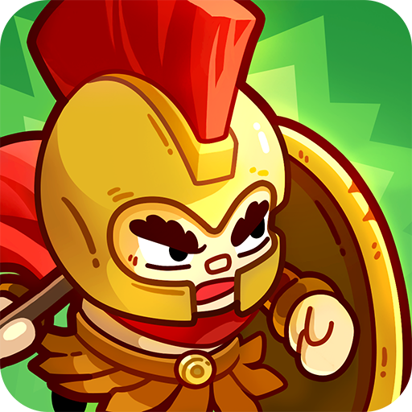
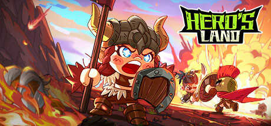

히어로 랜드M 출시일 8월7일 사전예약50만 돌파 총정리
2026년 8월 7일, 애플 앱스토어와 구글플레이에서 히어로 랜드M이 정식 출시합니다. 스팀에서 먼저 나온 서바이벌 파밍 MMORPG '히어로 랜드'를 모바일로 옮긴 작품인데요, 출시를 이틀 앞둔 지금 사전예약 인원이 50만 명을 넘기면서 화제를 모으고 있어요. 저도 아직 직접 설치해서 해본 건 아니지만, 지금까지 공식적으로 풀린 정보만 가지고 뭘 기대할 수 있고 뭘 더 지켜봐야 하는지 정리해볼게요.
한눈에 보기
| 항목 | 내용 |
|---|---|
| 게임명 | 히어로 랜드M |
| 출시일 | 2026년 8월 7일 |
| 플랫폼 | 애플 앱스토어 · 구글플레이(모바일 전용) |
| 서비스 | 오리엔조이(Orienjoy) |
| 원작 | 스팀 '히어로 랜드(Hero's Land)' |
| 사전예약 | 50만 명 이상 참여 |

구글플레이에 올라온 히어로 랜드M 공식 아이콘이에요.
이미지 출처: Google Play – 히어로 랜드M · 네이버 본문엔 받아서 재업로드 권장
히어로 랜드M, 언제 어디서 만날 수 있나요?
히어로 랜드M은 2026년 8월 7일, 애플 앱스토어와 구글플레이에서 동시에 정식 출시돼요. PC나 콘솔 버전은 따로 없고 모바일 전용으로만 나오는데, 서비스는 오리엔조이(Orienjoy)가 맡습니다. 정확한 오픈 시각은 스토어마다 다를 수 있어서, 8월 7일 당일에 스토어를 직접 확인해보시는 게 제일 정확할 것 같아요.
사전예약 50만 돌파, 어떤 의미일까요?
정식 출시를 앞두고 사전예약에 50만 명 이상이 참여했어요. 신작치고는 꽤 눈에 띄는 숫자라 여러 게임 매체에서도 이 소식을 비중 있게 다뤘더라고요.
- 사전예약에 참여한 전원에게 인게임 보상이 지급될 예정이에요.
- 누적 참여 인원 구간마다 단계적으로 열리는 마일스톤 이벤트도 함께 준비돼 있는데, 50만 명을 넘기면서 이 마일스톤 보상이 전 구간 해금됐다고 해요.
- 다만 정확히 어떤 보상을 얼마나 주는지는 아직 자세히 공개되지 않았어요🔍 게임 내 확인.
보상 목록이 궁금하신 분들은 출시 이후 게임 안내나 공식 채널을 챙겨보시는 게 정확하겠습니다. 참고로 아직 사전예약을 안 하신 분이라면 공식 홈페이지나 앱스토어 검색으로 지금도 참여할 수 있어요.
원작 스팀 '히어로 랜드'는 어떤 게임이었나요?
히어로 랜드M의 원작은 2023년 스팀에 나온 서바이벌 파밍 MMORPG '히어로 랜드(Hero's Land)'예요. 특징을 정리하면 이렇습니다.
- 미니어처 스타일로 그려진 캐릭터·월드 그래픽
- 몬스터를 사냥해 장비를 파밍하고 캐릭터를 키우는 구조
- 죽으면 장비를 그대로 잃는 하이리스크-하이리턴 PVPVE 방식
- 귀엽고 개성 넘치는 펫 3마리를 데리고 다니면서 도감을 채우고, 펫을 전투에 데려가 함께 레벨업시키는 육성 요소
- 망루·가시 함정·가속 점프대 같은 시설을 설치해서 길드원과 함께 몬스터를 몰아붙이는 협동 길드전 콘텐츠
- 가방과 창고에 아이템을 정리해서 관리하고, 사냥하다 죽으면 장비가 그대로 드롭될 수 있는데, 대신 얻은 전리품을 팔아서 영웅을 레벨업시키는 성장 시스템
- 죽고 나서 다시 시작할 때마다 새로운 영웅·펫·특성을 하나씩 해금해나가는 로그라이크풍 재도전 요소
펫을 챙겨서 함께 레벨업하고, 길드원들이랑 시설까지 지어가며 협동하는 부분까지 있는 걸 보면 혼자 파밍만 하는 게임은 아니었던 것 같아요.
참고로 이 원작은 스팀에서 누적 4만5천여 건의 리뷰가 쌓인 게임이에요. 다만 전체 평가는 '복합적' 판정(약 54% 긍정)이고 최근 30일 평가는 40% 긍정으로 다소 아쉬운 흐름이라, 무조건 다 좋았다고 포장하긴 어려워요. 그래도 그만큼 많은 사람이 직접 플레이해 본 게임이라는 건 분명하죠.

원작인 스팀판 '히어로 랜드' 스토어 대표 이미지예요.
이미지 출처: Steam – Hero's Land · 네이버 본문엔 받아서 재업로드 권장
모바일에서는 뭐가 달라지나요?
히어로 랜드M은 원작의 게임성은 그대로 두고, 조작 방식만 모바일에 맞게 최적화했다는 게 여러 매체가 공통으로 전하는 설명이에요. 전투 방식도 구체적으로 공개됐는데요, 하나의 영웅이 무기 스킬 3개를 직접 활용하는 방식으로 싸우고, 싸우는 상황에 따라 장비 세팅과 스킬 조합을 유연하게 바꿔볼 수 있어서 전략을 짜는 재미가 있다고 해요. 여러 지역을 탐험하면서 장비를 모으고 PVE 콘텐츠는 물론 통합 서버 단위의 PVP 맵까지 즐길 수 있다고 합니다. 스팀 원작의 파밍 루프를 모바일로 그대로 들고 온다는 점, 그리고 출시 전인데도 마일스톤 보상이 벌써 다 열려 있다는 점이 개인적으로는 기대되는 포인트예요. 전투 스킬 조합을 상황에 맞춰 신경 써야 한다는 점에서, 단순히 버튼만 누르는 방치형보다는 손이 많이 가는 타입의 게임을 좋아하시는 분들이라면 특히 재미있게 느껴지실 것 같아요.
그럼 아직 모르는 부분도 있을까요?
네, 아직 남아있어요. 직업(클래스) 구성이 정확히 몇 종류로 나뉘는지, 그리고 뽑기나 패키지의 정확한 확률 같은 세부 수치는 공식적으로 자세히 안 나왔거든요. 구체적인 던전 콘텐츠 구성도 마찬가지고요. 이 부분들은 솔직히 말해서 출시 이후에 직접 들어가서 확인해봐야 정확할 것 같습니다.
자주 묻는 질문
Q. 히어로 랜드M 과금(뽑기) 시스템은 어떻게 되나요?
게임 플레이로 얻는 골드만으로도 모든 영웅 캐릭터를 해제할 수 있다는 점은 공식적으로 확인됐어요. 즉 과금을 전혀 안 해도 캐릭터 수집 자체는 가능한 구조인 셈이죠. 정확한 뽑기 확률이 궁금하시면 게임 내 확률표 메뉴에서 직접 확인하실 수 있을 거예요.
Q. 히어로 랜드M 사전예약은 언제까지 할 수 있나요?
별도 마감일 없이 정식 출시 전까지 계속 진행되는 방식이에요. 다만 8월 7일 출시와 동시에 사전예약 자체는 종료될 테니, 아직 못 하셨다면 그 전에 챙겨두시는 게 좋겠죠.
히어로 랜드M 정리
정리하자면, 히어로 랜드M은 검증된 파밍 루프를 기반으로 한 원작 기반 신작이에요. 원작에 있던 펫 육성·길드 협동 콘텐츠도 모바일에서 이어질지 기대해볼 만하고, 골드만으로도 영웅을 모을 수 있는 구조까지 갖춘 게 확인됐어요. 골드만으로도 캐릭터를 모을 수 있다는 점만 봐도, 처음 시작할 때 부담이 크지 않은 게임일 것 같아요.
파밍하면서 장비 모으는 손맛을 좋아하시는 분, 죽으면 장비를 잃는 하이리스크-하이리턴 PVPVE 긴장감을 즐기시는 분, PC 없이 모바일로 가볍게 즐기고 싶으신 분이라면 8월 7일 한 번 접속해서 직접 확인해보시는 것도 괜찮을 것 같아요.
히어로 랜드M 이야기는 이번이 첫 글이에요. 정식 출시 이후에는 초반 육성이나 실제 플레이 후기로 이어서 찾아뵐게요.